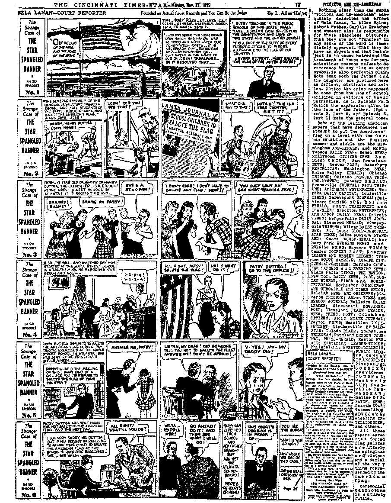

Archbishop Spellman (Roosevelt’s Intemuneio)

Contents
Roosevelt's Ambassador to the Pope (Part 1)
Manton, Persecutor of Judge Rutherford
Britain—British Liberties Gone
Why British Officials Are Pro-Arab
English Liberties Are Voted Away
Under the Totalitarian Flag
Why Catholics Become Communists
Counsel by J. F. Rutherford
British Comment ,
Neutrality of Jehovah’s witnesses
New Government
Interesting Plant Peculiarities
Published every other Wednesday by WATCHTOWER BIBLE ANO TRACT SOCIETY, INC, 117 Adams St., Brooklyn, N. Y„ U. 9. A.
Editor Clayton J. Woodworth
Business Manager Nathan H. Knorr
Five Cents a Copy
fl a year In the United States (!■ £5 to Canada and all other countries
NOTICE TO SUBSCRIBERS
Remittances: For your own safety, remit by postal or express money order. When coin or currency la lost in the ordinary malls, there is no redress. Remittances from countries other than those named below may be made to the Brooklyn office, but only by International postal money order.
Receipt of a new or renewal subscription will be acknowledged only when requested. Notice of Expiration is sent with the journal one month before subscription expires. Please renew promptly to avoid loss of copies. Sand change of address direct to us rather than to the post office. Tour request should reach us at least two weeks before the date of issue with which It is to taka effect. Send your old as well as the new address. Copies will not be forwarded by the post office to your new address unless extra postage fa provided by you.
Published also in Afrikaans, Bohemian, Danish, Dutch, Finnish, French, German, Greek. Hungarian, Japanese, Norwegian, Relish, Portuguese, Spanish, Swedish, Ukrainian; also special Australian edition in English.
OFFICES FOR OTHER COUNTRIES
England 34 Craven Terrace, London, W. 2
Canada 40 Irwin Avenue, Toronto B, Ontario Australia 7 Beresford Road, Strathfield, N.S.W. South Africa 623 Boston House, Cape Town
Entered as second-class matter at Brooklyn, N, Y., under the Act of March 3, 1873.
British Schoolboy Howlers
Pharmacy is another name for tilling the soil.
False doctrine means giving people the wrong medicine.
The stomach is the most dilated part of the elementary canal.
Hell hath no fury like a woman’s corn.
An epistle is the wife of an apostle.
A Petty Officer is one who looks after the ladies.
Sinister means a woman who hasn’t married.
The Darkey’s hour is just before the dawn. This is a very famous African proverb.
Account of the feudal systemWilliam the Conqueror was thrown from his horse and wounded in the feudal system.
Velocity is what anybody puts down a hot plate with.
Guerilla warfare is when monkeys fight each other. 1
The home of the swallow is the stomach.
The earth makes a resolution every 24 hours.
The difference between air and water is—-air can be made wetter, but water eannot.
A parallel straight line is an imaginary line which, if produced to meet itself, does not meet.
The pilot saved his life by jumping out of the plane with a parasite.
The Pencil Supply
“Where’s your pencil, Aiff”
“Ain’t got one, teacher.”
“How many times have I told you not to say that! Listen: I haven’t got one, you haven’t got one, they haven’t got one.”
“Well, where are all the" blinkin’ pencils 1” —Kellypram.
Thoughtful
Office boy, after investigating: No, the boss is not in.
Caller: Oh, and I have forgotten my visiting cards.
Office boy: Oh, that’s all right. I told him who you were 1
Where Teacher Had Failed
Teacher: “I have went.” That’s wrong, isn’t it ? -
Pupil: Yes, teacher.
Teacher: Why is it wrong ?
Pupil ■. Because you ain’t went yet.
CONSOLATION
.•*■ iv; • • .-i ~ ~ ~ TT7
■ ■ . V " •
“And in His name shall the nations hope.”—Matthew 12:21, A.R.V.
Vplum« XXI
Brooklyn, N. Y., Wednesday, January 24, 1940
Number 531
Roosevelt’s Ambassador to the Pope
(In Two Parts—Part 1)
Franklin D. Roosevelt is the servant of the American people, not their boss. The people, by their duly elected representatives and senators, make the laws. The president executes them. He does what the people tell him he may do, and refrains from doing what he has not been commissioned to do. The Constitution, under which he works, sets forth the will of the people. They made the Constitution; it is their official statement of the limitations they put upon their own servants.
Roosevelt was entirely out of bounds when he appointed Myron C. Taylor, ex-chairman of the United States Steel Corporation, his personal ambassador to the pope, This was purely a political move, and against the best interests of the American people, and intended for their enslavement to the Papacy, above and beyond the enslavement under which they are already chafing.
Archbishop Spellman (Roosevelt’s Intemuneio)
Roosevelt sent for Archbishop Spellman, of New York, and told him on the night of December 23 of Taylor’s appointment, and asked him to convey to the pope this illicit compliment to him and outrageous insult to the American people. Spellman’s picture appears on this page. He was pleased with the president’s betrayal of the American people, his violation of the Constitution.
An Ostensible Peace Afooe
Roosevelt’s ostensible peace move was not a peace move at all; it was a political move,
JANUARY 24, 1940 to see how the American people would take this latest insult to their intelligence and affront to their liberties. The war is principally between Germany and Britain, and the appointment is unwelcome to either the British Government or the British people. Only one British newspaper paid any attention to what the British people are clever enough to see is purely an internal American political move, a camouflage.
Roosevelt’s letter to the pope is as unscriptural and un-American as it was uncalled for and unwanted. In it he said,
We remember that the Christmas star was first seen by shepherds in the hills long before the leaders knew of the great light which had entered the world.
What is the use of remembering something that is not so ? The star which the magi (magicians, spiritists) saw, some two years after the birth of Jesus, was not a "Christmas star” at all; it was merely an eerie, phantom light, which the Devil used to try to bring about the death of the newborn King. The shepherds never saw that false light, but they did see the angels from heaven, on the very night the Savior was born. As far as their “leaders”, the clergy, are concerned, they never saw anything; their only interest in Jesus, the Son of God, was to get Him out of the way, put Him to death, which they finally did.
Roosevelt speaks of the “dark ages” which he thinks were dark because of the barbarians and not because of the dreadful Inquisition
which the popes inaugurated and yji maintained. He says of the period । that followed the Inquisition that— through a rekindling of the inherent spiritual spark in mankind, another rebirth brought back order and culture and religion.
There is no “inherent spiritual spark in mankind”. Few indeed of the human family have ever been brought forth of the Lord’s spirit, and fewer still will ever see God’s face.
I said in mine heart concerning the estate of the sons of men, that God might manifest them, and that they might see that they themselves are beasts. For that which befalleth the sons of men befalleth beasts; even one thing befalleth them: as the one dieth, so dieth the other; yea, they have all one breath; so that a man hath no preeminence above a beast: for all is vanity. All go unto one place: all are of the dust, and all turn to dust again.—Ecclesiastes 3:18-20.
Roosevelt thinks that after the “dark ages” there was more religion. He ought to know that there never was a period in earth’s history when the people were so downtrodden and , overrun with superstition and ignorance of Almighty God as during those same “dark ages”. The people had too much religion then, and they have had too much always. Religion is merely reverence for human tradition and human teachers and ignoring of God’s Word of truth and of God himself, the Author of that Word.
Not All Are Children of God
In his surprising letter of misinformation Roosevelt said of the masses of the common people:
They know that the civilization handed down to us by our fathers was built by men and women who knew in their hearts that all were brothers because they were children of God.
Roosevelt should have been told long ago that Jesus said of the clergy of His day:
Ye are of your father the devil, and the lusts of your father ye will do.—John 8:44.
He seems to think that there are no children of the Devil. How, then, would he explain such statements as these?—
He that committeth sin is of the devil.—1 John 3:8.
In this the children of God are manifest, and the children of the devil: whosoever doeth not righteousness, is not of God, neither he that loveth not his brother.—1 John 3:10.
He knows that the Roman Catholic Hierarchy claims the right to murder every person teaching differently from the Roman
Catholic Church, and overlooks the obvious truth that—
Whosoever hateth his brother is a murderer: and ye know that no murderer bath eternal life abiding in him.
—1 John 3:15.
Roosevelt, as a matter of policy, extended a sop to both the Protestants and the Jews; he would see their representatives himself, and did so. But that was all camouflage. His real deal is with the pope.
A Dictatorship Foreseen
Forewarned through God’s Word, Jehovah’s witnesses have been anticipating for years that the present move would be made. In the book Riches, page 253, Judge Rutherford said, in part, “In other words, the president of the United States agreed to support the Roman Catholic Hierarchy, a foreign power, and to openly do so as soon as the public could be blinded enough to come around to it.” See the entire chapter on “Philistines”, and especially pages 249-254. The same subject is also referred to in the book Enemies, page 291, which please see. God foresaw all this centuries ago.
By one artifice after another Roosevelt has persuaded Congress to put in his hands the power to, at any time, without consulting Congress, (a) close all the banks of the nation; (b) close all the stock exchanges and forbid the sale of all stocks and bonds for ninety days at a time; (e) prohibit the export of coal; (d) restrict travel between the United States and foreign countries; (e) change the gold content of the dollar, and thus change the value of wages and property of every sort; (f) reduce the weight of the silver dollar; (g) commandeer all silver in the hands of the people, as gold has already been commandeered ; (h) regulate rates of exchange of all foreign currencies and the amount of such currencies that American citizens may acquire; (i) raise or lower tariffs at will; (j) tell the farmers what and how much they can plant, and fix prices for their products; (k) extend or withhold money or work or farm relief; (1) exercise absolute, unlimited power to stop free speech over the radio.
Many other tremendous powers have been wheedled away from Congress (the people) and placed in the president’s hands, and when recently a Congressional body wanted a list of them, and asked the Department of Justice for them, the then attorney general, Murphy, refused the information. That is rich. Who pay the attorney general ?
Free Speech over the Radio
Maybe you did not know that the Federal Communications Commission by its edict 42.03 decreed that a licensee of an international broadcast station may render only an
international broadcast “which will reflect the culture of his country and which will promote international good will, understanding and co-operation”. In other words, you may talk discreetly about “Mother and JTome”, but if you get down to brass tacks and holler about something wrong, then you are all through,
Samuel B. Pctten-gill, Democratic member of Congress in 1931-1938, helped write the Aet which created the Federal Communications Commission, and declares that every member of that legislative committee most positively understood and intended and specified that not one thing was to be understood or construed as giving the Commission any powers of censorship at all, or promulgating or fixing in any way the right of free speech by radio communication.
Mr. Pettengill, writing on this subject for tile National Committee to Uphold Constitutional Government, says with a punch:
This is a mell of a hess! It used to be supposed that any American who had something on his chest could hire a hall and speak his mind. We used to think that this was the essence of free speech. Now, however, men are not to be permitted to buy time on the radio to discuss public questions. Through the control of “balanced programs” and “free time” the broadcasters exercise a censorship on not only what is said hut also who says it. This . is a part of the black-out of freedom whose dark Bf shadow is crossing the Atlantic.
The victims are the millions of American people who are to he denied the opportunity to listen * if they choose to do so. The victim is any American now or in the years to come who may want to pe-JANUARY 24, 1940
tition his fellow men and his Congress for the redress of grievances. The victims are the •minor political parties and minority groups. The denial of the right of one American is an encroachment upon the rights of all Americans.
Who egged on the broadcasters? This takes us behind the scenes where the wheels go round and the wires are pulled. It brings us to the question of the extraordinary power over the radio that is now in Mr. Roosevelt’s hands. Would you believe it if 1 were to tell you that today, now, the president may shut up any and all radio stations whatsoever? He may shut America off the air. He may take over the broadcasting stations and turn them and their apparatus over to some government department, lie may make of radio a government monopoly, with the result that no program and no speech could go on the air that was in conflict with his views.
On its face the new code forbidding the purchase of radio time for the discussion of “controversial” questions has a clever appearance of fairness. But no one whose eyeteeth have been cut need be fooled by any offer to give “free time” on balanced programs. Beware of Greeks bearing gifts! Free speech is the right of all, and the “gift” of none!
These “balanced programs” are old stuff. The reds know it well. It has been a practice with them to stage public debates. On one side they put up one of their veteran speakers, skilled in all the arts of the platform. On the other side they select a “soft” advocate of free enterprise—young, inexperienced, with pebbles in his mouth. The veteran steals the show.
This effort to control radio has been going on a long time. Advertisers, station owners, and manufacturers and merchants of radio sets had better wake up. Their interests are at stake. If the American people once get the idea that someone behind the scenes is deciding what they shall not hear, they may tune off, to someone’s huge detriment.
Frank Gannett, chairman of the committee last above named, and once an enthusiastic supporter of Roosevelt, now clearly discerns that, the president is a dictator in all but in
name, calls upon him to resign, and sets forth some additional reasons. 'F Th® statement, issued at Washington, said, in part:
His Administration has proved a failure. It began with one hundred days of recovery and stimulation of private enterprise. Then it turned to a program of scarcity, to restriction of production, to regimentation, to control of everything and everybody from Washington, and finally it destroyed incentive and began a spending program that now endangers our country.
No president ever had so great an opportunity. Congress, at the peril of undermining our democracy, granted him the almost unlimited emergency powers and money which he demanded. He promised to use these delegated powers to bring recovery, but he used that power and money and patronage to get more power and to build up a great self-perpetuating nation-wide political machine.
He shackled private enterprise with political controls. Now he invades banking and credit fields with proposals which such advisers as Mr. Berle admit will give the government growing control of banking and private business. He saps the nation’s strength by overtaxation. While diverting the public mind with false promises of abundance and security, he has failed to bring re-employment to ten million. The great middle class which earns and pays its own way and pays the taxes that support government now faces destruction.—In New York Times.
Not the Only American
To hear some people talk, you would think Roosevelt is the only American. He is said by some to be the idol of the Jewish people, the C.I.O., the unemployed, the Negroes, the pinkfringe political parties, and the old folks ; but the faets are that the country as a whole, and hence the interests of all these, are in much worse condition than when he went into office. Roosevelt has not overlooked the fact that all these people are voters.
He has been on the lookout for religious voters, too, particularly Catholic religious voters. In one of his recent letters he said, “There never has been a time in our history when there was deeper need for calling our people to faith in religion than the present moment.” (New York Times) It is too bad he did not take time to digest Judge Rutherford’s “Counsel” in Consolation No. 501, page 17, on “Revival of the Spirit of Religion”. It covers the case completely. Here it may suffice to merely remark that religion caused the death of all the prophets, religion caused the crucifixion of Christ, religion murdered not less than 50,000,000 persons in the Crusades 6 and in the Inquisition, and religion put 2,000 innocent Christian men and women in prison in America in the last few years for doing what the Supreme Court has now decided they have a perfect right to do—worship God by obeying His command to take the Kingdom message from house to house as did the Lord and the apostles.
Thus business of kowtowing to religion needs fumigating. Roosevelt would claim, no doubt, to be a Jeffersonian democrat. He says, “The defense of religion, of democracy’ and of good faith among nations are all the same fight”; but Jefferson called the clergy “cannibal priests” and their racket “superstition”.
“The Forgotten Roosevelt”
Roosevelt himself is an alleged Episcopalian, but the Columbia (Knights of Columbus) magazine of December, 1933, published the fact that his father’s first cousin, James Roosevelt Bayley, was the first bishop of Newark, N.J. See facsimile in Consolation No. 482, pages 14,15. Roosevelt went into further detail on this in his note to the Catholic University of America when he said, recently:
I had hoped that I might, in connection with the jubilee, again visit the institution which honored me with its degree and in whose progress I have, therefore, the enthusiastic interest of an alumnus. God speed C. U. [Catholic University] in the attainment of its noblest aims.
Perhaps I may be pardoned for mentioning a personal and family interest in the archdiocese of Baltimore, which latterly became the archdiocese of Baltimore and Washington, within whose bounds the university is situated. An earlier archbishop of Baltimore, James Roosevelt Bayley, was my father’s first cousin. Those of you who are familiar with the succession in the line of Baltimore prelates know that Archbishop Bayley, a nephew, by the way, of Mother Seton, was the immediate predecessor of the venerable Cardinal Gibbons, whose friendship was very dear to me and whose memory is in benediction.—In New York Times.
Maybe Roosevelt does not know why he is an Episcopalian; so it may not be out of place to remind him that the 19th article of faith of the Church of England specifies that “the Church of Rome hath erred, not only in their living and manner of ceremonies, but also in matters of faith”. Also, article 22: “The Romish doctrine concerning purgatory, pardons, worshiping and adoration, as well of images as of reliques. and also invocation of saints, is a fond thing vainly invented, and grounded upon no warranty of Scripture, but rather repugnant to the Word of God.” Also, article 28: “Transuhstantiation (or the change of the substance of bread and wine) in the Supper of the Lord cannot be proved by Holy Writ, but is repugnant to the plain words of Scripture, overthroweth the nature of a sacrament, and hath given occasion to many superstitions.” Also, article 37: “The Bishop of Rome hath no jurisdiction in this realm of England.” It appears that Roosevelt is a much better Roman Catholic than he is an Episcopalian.
Jim Farley's Toe Hold
Roosevelt is a clever politician, but not half as clever as Jim Farley, who made him president and who never forgets a name, a face or a fact. Jim goes over to Vatican City every little while to find out what he should do to please the “holy father”; and don’t you think for a minute that he goes without ideas or comes away without more. On a certain day not so long ago he visited the pope and told him that he is the only person in the whole world that can really mediate in the troubled condition now on earth. On that very day the pope sent his special ambassador to Warsaw to try to get them to surrender peaceably to their brother Catholic, Adolf Hitler. They did not do it, and you know what happened. Here are two interesting statements in this connection:
It was clear from the beginning that Pope Pius XII was working for a German-Polish compromise. The Vatican denied it again and again, but its denials were never very convincing. Now the cat is out of the bag—the Holy See admits a Vatican envoy went to Warsaw to put “sense” into the heads of the Polish rulers.—Ludwig Lore, in New York Post.
Even the Vatican has contributed its negative item in today’s news by unofficially denying that a high prelate has been sent to Warsaw. One can only repeat that the news came from an authoritative source and, whether true or not, it would be denied on general principles, since the utmost secrecy is always maintained regarding the Holy See’s diplomacy.—Associated Press dispatch from Rome.
The Cincinnati Post carried a big story, long before Roosevelt appointed his private ambassador to the pope, showing that the whole situation had been discussed between Mundelein, Roosevelt and Pacelli as to the position of the United States respecting this new war; that there had been conferences both as to policy and as to language and that the three were in complete accord. Without a doubt this idea of a private ambassador was fixed up months or possibly years ago.
In an address to the Haitian minister to the Vatican the pope showed that he had in mind that he would like to be arbitrator. He said, in effect, that he had a-desire to see, after the present war, “a stable and fruitful international organization” that “will respect the rights of God”. That was good of him, to make a few suggestions for helping God out in a pinch. His idea of God is that it is the Roman Catholic Chureh, of which the Devil is the head and the pope is his spokesman. It might do the pope a little temporary good if he would take some time to think about the real God, the great Jehovah, and the limitless power which is always His. Here are some of the texts:
Is any thing too hard for Jehovah!—Genesis 18:14, Am. Rev. Version.
Ah, Lord God! behold, thou hast made the heaven and the earth by thy great power and stretched out arm, and there is nothing too hard for thee.—Jeremiah 32:17.
I say unto you, that God is able of these stones to raise up children unto Abraham.—Matthew 3: 9.
With God all things are possible.—Matthew 19:26.
For with God nothing shall be impossible.— Luke 1:37.
Take Another Look at Spellman
Take another look at Spellman, the archbishop of New York, the president’s selection to bear his message to the Papal legate—a message that he has concurred in the Vatican’s wishes and illegally sent a personal ambassador to represent him there. You will see his picture on page 3. Spellman recently publicly deplored the fact that man “fails to realize his spiritual nature, his immortal destiny”. It should be explained to the gentleman that only a very few of mankind will ever have a spiritual resurrection or an “immortal destiny”. Man was made to live on the earth; and on the earth, with rare exceptions, he will live if he lives at all.
Spellman has some things to explain, notably about one of Roman Catholicism’s brightest and most shining lights, ex-judge Martin T. Manton, next to the United States Supreme Court in dignity at one time, and a Knight of the Order of St. Gregory the Great, and living in Spellman’s archdiocese. In Spellman’s presence, the “Reverend Father” Cornelius
J. Drew, addressing the Catholic lawyers of New York city, said:
“Inspired by religion, a lawyer would never deface justice by shearing her locks that look like gold; he would never suborn witnesses for guilty criminals, whose retainer is ill-gotten goods that curse rather than bless their possessor; he would never exercise judicial authority for dishonest profit; he would never conspire to defeat justice.” —In New York Times.
Manton was not mentioned by name, but he should have been. Why was he not? Archbishop Spellman was present and heard what “Father” Drew said, and missed the golden opportunity to stand on his hind legs and say: “Drew means that dirty crook, Martin T. Manton.” Such a statement would have done more to convince the American people of Spellman’s honesty and sincerity than all the other things he ever said and did put together.
Just about the time that Manton was sentenced to two years in prison for selling justice over the counter, like so much pork or molasses, Bishop Gannon made the public statement that the Roman Catholic Church has gone to great lengths to establish a national system of moral education in the United States and needs the help of the government to carry on. Awk!
Manton, Persecutor of Judge Rutherford
The first of the suits involved in the conspiracy, the Art Metal Works case, was begun in 1932, the defense being assumed by the Evans Case Company. Reilly, president of the company, was one of the conspirators. He advised with Fallon about the case on a number of occasions. He gave Fallon, at the latter’s request, many sums of money aggregating thousands of dollars and for several years carried him on the pay roll of the Evans Case Company at $100 per week and paid him other sums, the whole amounting to nearly $20,000. The District Court having decided the case against the Evans Case Company, the company appealed. In another case decided in its favor an appeal was taken by the losing party. After some negotiations between Reilly and Fallon, the former expressed a willingness to pay $25,000 upon Fallon’s assurance of favorable action by Manton on the appeal, $15,000 to go to Manton as a loan. At a later time, Reilly was informed by Fallon by telephone that he had learned that the decision would be favorable and “that the Judge [Manton] was in bad circumstances for the money and wanted to know if I could not get $10,000 as quickly as possible”. About the same time, decisions favorable to the Evans Case Company were handed down, the opinions being rendered by Manton. Reilly then paid Fallon $10,000 in cash and also gave him three $500 8
checks. The $10,000 was entered in the books of the Evans Case Company as “Prepaid Royalties, Air-Flow”. Subsequently, on motion of Reilly, the board of directors of the company directed that the item be transferred to the “legal and professional account for litigation expense”.
During the summer of 1934, Reilly was introduced by Fallon to Manton, and thereafter Reilly, Manton and Fallon played golf together, and Reilly lunched with Manton at the Lawyers Club and went out with Manton and his wife, Fallon at times being present. In February, 1939, Manton resigned his office. A day or two before the resignation was to take effect Manton called Reilly on the long-distance telephone and told him he understood that he had Bill (meaning Fallon) on the pay roll. Receiving an affirmative reply, Manton said: “That will be very embarrassing for me if found out, because I heard they intend to investigate.” Manton then said: “Couldn't you pull out these pages?” Reilly answered he knew nothing about bookkeeping and would not know where to begin. Manton repeated that it would be very embarrassing for him, and Reilly responded: “I don’t know what to do about it.”
After the lapse of a few hours, Reilly had another long-distance telephone talk with Manton, first asking him if it was all right to talk. Manton answered: “I don’t think exactly.” Manton then asked Reilly for his telephone number and said that he would call him back under another name. Later in the same day, the call was made, and the former conversation was repeated in substance. In the course of this conversation, Manton spoke of the statute of limitations and said that it would protect them in the Art Metal investigation; that anything that was three years old was outlawed. Manton again spoke of Fallon’s being carried on the pay roll, saying that it was a great embarrassment to him, and urged getting rid of the records because of the Art Metal investigation. Manton admitted that telephone conversation between himself and Reilly occurred, and that he initiated them, but gave a different version of what was said.
A few days later, Reilly directed the bookkeeper to procure all the records and to destroy them. The bookkeeper destroyed the records of the company up to 1935—cashbooks, ledgers, bills, vouchers and everything, with the exception of some papers subsequently discovered and turned over to the Government.
Manton's Friend Spector
Spector had received from Andrews $5,000. Instead of transferring the sum ££7 one c^eck to Manton’s secretary, he
■Lo.^5--oj first drew a check for $2,437.60, and B--? a day or two later another check for $2,562.40, the two aggregating $5,000, the proceeds of both finding their way into the hands of a Manton corporation. On another occasion the sum of $5,000 was divided into two checks, one for
$2,615.66 and the other for $2,384,34. Both checks bear the same date, and the proceeds followed the same course as in the preceding instance. Taken in connection with other evidence, it is hard to explain these devices upon any other theory than that they were adopted to conceal the real facts and to aid in the consummation of the criminal conspiracy. —Part of the Decision of the United States Circuit Court of Appeals confirming Manton’s conviction of the conspiracy to obstruct the administration of justice and to defraud the United States.
It seems never to occur to the Roman Catholic Hierarchy that murder is murder. The extermination of the Albigenses, of Languedoc, now France, in the year 1229 (A.D.), was by command of the pope, was endorsed by Pius XI just before he passed into the oblivion from which he will never awake, and in direct line with every pope’s policy of butchering or causing the butchery of all who disagree with him. It is of interest to Americans to be told that the rosary was worn by all the soldiers that murdered the Albigenses. This information comes in the Burlington (N. C.) Daily Times. The speaker was the “Reverend Father” Ambrose Smith, of New Orleans.
At Valdese, North Carolina, are now living descendants of the Waldensians, whose ancestors also suffered similar terrible things in France because they loved God and hated the Roman Catholic Hierarchy. A quotation from the Fact Digest follows:
The army went from town to town, killing all they met, burning their homes and destroying their crops of corn. Sixty men and thirty women of Cabueres surrendered, upon promise that their lives would be saved, but as soon as they surrendered they were killed. Some women hid in a church were brought out and put in a barn and the barn set on fire. Twenty-two towns were destroyed and thousands were killed and the community ruined, all by the [Roman Catholic] church and its president [the pope].
The Murderous Hierarchy
BHSRi America has few leaders who have any principle or any baek-r bone. Maury Maverick, of San
Antonio, is an exception. Favoring free speech for even the Communists, he bravely stood by the Constitution to let a little group of 75 persons hear a woman lecture. The archbishop of San Antonio, A. J. Drossaerts, is an anarchist and used his immense power to impede the carriage of justice. The county commissioners and American Legion of San Antonio yelped in the same pack, thus showing they also are anarchists at heart and serve the American flag only because they dare not do otherwise. Newspapers were yellow at heart, as usual.
Under the guidance of the “Reverend Father” M. A. Valenta, secretary to the archbishop, a mob of 8,000 was gathered which crashed through a cordon of 180 police and did $3,000 of damage, besides injuring 17 persons. Valenta led his mob to a policeman and they took away the officer’s pistol and cap. Police were stoned.
Not a priest, rabbi, clergyman, businessman, labor leader or newspaper had the courage to stand by the courageous mayor in this seizure of power by the anarchist, archbishop and the Ku Klux Man, and when some decent and honest Americans in the city wrote to the newspapers defending Maverick, the letters, though not printed, were turned over to other anarchists, who waited upon the writers and threatened them with violence. This exhibition in San Antonio is a fair picture of what the Vatican gangsters have in mind for America very soon.
Practically every window in the auditorium was broken. Though many police were injured by the Hierarchy-inspired mob, no citizen was injured in return. However, the mayor has served notice that the next time there is an ungodly riot in San Antonio the police will give them the works; and they should.
Judge Rutherford and the Watch Tower Bible and Tract Society, of which he is president, have damage suits against the Roman Catholic Hierarchy and allies for some $450,-000 for various conspiracies to deprive Jehovah’s witnesses of their Scriptural, legal and constitutional rights, in Colorado, Ohio and Pennsylvania. These suits can, and no doubt will, be multiplied in numbers and damages asked as time goes on. An item in the boilerplate sheet known as The Register boasts that such a conspiracy in Grand Island, Nebraska, was a success, resulting in the cancellation of a contract for the use of the Majestic theater there. The headline read, “Catholic Groups Stop Rutherford Theater Lecture.” It did not read, “Jehovah’s witnesses Stop Catholic Group Meeting.” The conspiracy against everything American is patent on the face of it. Yet these gangsters would teach America democracy, and Roosevelt, without authorization to do so, sends a private ambassador to the head of the racket at Vatican City, to find out what the pope wants done in America.
(To be continued)
The censorship of the press is made absolute—radio always has been controlled by the government. The stage and newsreels are censored. Private mail and that of diplomatic staffs is censored. J
Any police officer may stop any public assembly if he considers it to be dangerous. Free speech is infringed by a decree providing that nothing bearing on military matters may be discussed. Government employees are ordered not to discuss their work, even with their wives.
Private premises, including homes, may be entered and searched without warrants. The government may billet soldiers or civilians in any part of the country.
The secretary of state may order any arrest he considers expedient. The government may restrict the movement of anyone in or out of the country- Any property, or undertaking, including land, may be taken by the government. Law cases, at the court’s decision, may be heard in secret.
The carrying of cameras or guns is forbidden. Private citizens are forbidden to use overseas telephone service. The postoffice is given power to ban all wireless transmitters.
A national registration of all citizens is ordered. Parliamentary bye-elections ate canceled ; it is planned to cancel the full election scheduled for November, 1940.
A broad list of general regulations is established governing food and resources. The ra-‘tioning of food is ordered. Citizens are forbidden to buy more than one week's supply of any food item, under penalties ranging from a fine of $500 to two years in prison. The board of trade [similar to the department of commerce in the United States] is authorized to search homes and stores for food. Prices are to be fixed for meat, sugar, tea, fish, fruits, fat cattle, sheep, and pigs. The government has taken over all wholesale stocks of sugar and all imports of frozen meats. All flour mills and cereal products factories are commandeered- by the government. The minister of agriculture and fisheries is given absolute control over fishing industry and the use of farm land. ,
All foreign stocks held by the public [estimated at four billion dollars'worth] are mobilized by the government. All British gold holdings are concentrated in one pool under government control. New restrictions are placed on the export of securities, currency, and gold.
Control of railroads is taken over by the government. All hospitals are placed at the disposal of the government. The government is given power to commandeer private vehicles. Government consent is required for the transfer or mortgage of private ships or aircraft.
Unauthorized communication with any ship or aircraft is forbidden. Imports of luxuries are restricted by decree. In addition there are numerous regulations relating to personal defense. It is, for example, an offense not to carry a gas mask, and a $500 penalty is established for showing a light at night.—Chicago Tribune.
♦ It now comes out, as a result of careful studies, that even before the war British newspaper space for news was only 60 percent of that of United States newspapers, and that is one of the reasons why the American in Britain was surprised to find so little about America in the British papers. As a matter of fact, the average British paper devotes as much space to America as it does to either France or Germany, which is quite remarkable when the closeness of Britain to those countries and the urgency of the relatione between them are considered.
♦ It is no fault of the Irish lads and lassies that they cannot afford to marry young, but it is a fact that the Emerald Isle now has the highest percentage of young unmarried men and women in the world. All over rural Ireland the population is falling, as far as the new little folks are concerned. The Irish are a long-lived race, and hence the curious situation arises that the country tends to become populated by the very young and the very old.
Nephews of the King
♦ Nephews of King George, 15 and 16 years of age, in school at Eton, came near getting into serious difficulty by printing in their typewritten paper, the “Harewood News”, information regarding a type of gun they had seen. Reproduction of the offending article was forbidden.
* should say that those officials (cjSfiag have never liked, and have never K/gSj'/S been willing, to carry out the Balfour Declaration. They are pro’ Arab for reasons which really do
- appeal to many of us. In the first place the whole official class in this country, and, indeed, throughout the world, has a certain latent sympathy with Nazi Germany. The authoritarian ideal appeals particularly to officials. The totalitarian state also appeals instinctively to officials. Therefore, we have in the Civil Service, in the Army, in the Navy, and in the Air Force, among a good many of the people on top—I am not talking of the rank and file, but of the officers—a great deal of Sympathy with the authoritarian view which is predominant in Germany and in Italy. We have changed all that here, but we have changed it very recently. It is the experience of the last six mentis which has changed the sympathy with Nazi Germany which prevailed among the governing class in this country.
Of course, changes like that take place more slowly in the outlying parts of the Empire, and one can quite well expect that point of view to drag on in Palestine. It is illustrated in the Palestine administration in various ways. For instance, Mein Kampf was allowed to be sold freely in Palestine, whereas a reply to it was not allowed to be published or issued in that country. Representation on the Legis-- lative Council was desired for the German , colony in Jerusalem—by nomination. Propaganda which has gone on from Germany, and which is recognized now, has been repeatedly denied from the officials as not existing. In all these ways we have seen the German attitude xif mind; and, of course, with that there is the German attitude towards the Jews.— Kt. Hon. Josiah Clement Wedgwood, in an address in Parliament.
English Liberties Are Voted Away ♦ Liberty of the citizen heads the casualty list in Great Britain. To meet the thrust of dictatorship, the Defense of the Realm Act has gone into effect.
Any man may be arrested on order of the Home Secretary on no ground except that the secretary considers the arrest advisable. All premises may be entered and searched without warrant. The courts have discretion to order star chamber proceedings, either civil or criminal. The government may seize any property, JANUARY 24, 1940
Holders of foreign bonds or securities or evidences of indebtedness, public or private, ■ must list them with the government. They may not be sold or transferred, even to other British citizens, without official permit. If government needs them for exchange for purchases abroad, it can requisition them and pay in pounds possibly not acceptable abroad.
And in case such regulations ate found insufficient, the king has power to issue decrees which shall have all the force of acts passed by Parliament.
King George VI thus is theoretically erected into a monarch with far greater power than the czar of Russia had. The defense act is temporary and for an emergency, yet, under its terms, the king is the judge of the emergency.
Made permanent, this act would put England back where it was politically before the Magna Charta was signed by King John, at the sword's point.—San Francisco Chronicle.
♦ There are some millions of British people that really believe that the stone which Jacob had for a pillow was taken to Ireland by the prophet Jeremiah, was then taken to Scotland to be placed in the seat of the Scottish kings, and is now in the British coronation chair. This ehair, known to be 600 years old, is always carefully crated, removed from Westminster Abbey, and hidden in some secret place in time of war.
♦ Indications are that the firm of J. P. Morgan & Co., financial agents of the British Empire in 1914-1918, and responsible for getting the United States into that war, have their old job now for the British Commonwealth of Nations. The Morgan home in Scotland, Gannochy Lodge, has been turned into a hospital for the wounded.
Oddities in the Big City
♦ Some of the oddities in the big city, London, as late as the summer of 1939, were 36 cowsheds, 250 sheep, and 13 horse cabs. Also, there were in the limits of the big town 938 pigs, and 1,042 acres under crops, while 121 people earned a living from agriculture. In 1937 the police found 700 doors and windows insecurely fastened? #
♦ Dear Gene; You did pretty well with that encyclical of yours, but you could not write that way for Consolation; they would not have it. You use too many words. Fifteen columns, 10,373 words. Why, man, you could have squeezed all you said down into two Console lion pages instead of the equivalent of twelve of them. However, for a starter it was pretty good; it is necessary to call your attention to about fifteen slips. Maybe the next one will be better. You know, everybody is fallible.
Fourth column: You say that when you think of the suffering that has just come on countless people you are tempted to lay down your pen. Why didn’t you, Gene ? Why didn’t you? Most of it, so far, has come from those devoted sons of the Devil, Hitler, Mussolini and Franco. You know their “church”. Yes indeed! Yrou might better have kept your pen idle—at least until you excommunicated them.
In the same column yon say that these dark times may cause some to do a whole lot of thinking about the things you folks have been teaching and to grasp their importance. You betcha! Franco’s murder brigades and Hitler’s storm troopers and Mussolini’s bombers have taught them a lot more than you think. And they learned it outside of the newspapers and radio stations which you control, too.
In the same column, at the bottom, you mention that the denial of the fundamentals of morality had its origin in Europe. Maybe you mean that this business of judges’ selling their decisions for eash had its origin there, but has now spread to the United States, where one dirty crook, Martin T. Manton, ‘Papal Knight of the Order of Saint Gregory,’ did it wholesale, retail and any old way, so long as he got the cash. Why didn’t you mention him by name? He belongs to your “church”.
In column five you say that somebody had a marvelous vision that God is the Father of all. You forget yourself. It is true that Jesus did say of the clergy, “Ye are of your father, the Devil#" and it is also true that the apostle 12
Paul, whom you quote, referred to qthers as children of the Devil, “full of all subtilty and all mischief,” and you can class yourself along in with these, but it was indiscreet of you to bring this matter to attention. You slipped badly on that one.
In column six you express your approval of the commandment that Christians should love one another. Then how do you account for the conduct of your followers in breaking phonographs and records, seizing books, shooting at people and having them thrown into jail and beaten merely because they are Christians and are obeying Christ’s commands? You can have the evidence for the asking.
In the same column you speak about some church’s maternity. Better be careful along about there, Gene, or some will think you are not acquainted with the true church of Christ, which the apostle says is a pure virgin, and they will think this motherly church you are talking about is “the mother of harlots”, willing and anxious to make a deal with any renegade like Mussolini, Hitler, or even Stalin, for that matter, if she can see how she is going to get her desires gratified.
In the same column you say that wherever your church has gone you have taken up with all the heathen “usages” and “customs” and “sponsored” and “developed” them. You certainly have done that very thing, and made the child of the Devil tenfold more the child of hell than he was in the first place.
In the seventh column you say that your folks have raised mansions and temples to lofty and kindly heights, but you did not say how the poor people that paid for them had been browbeaten and bluffed and intimidated to build them. There are thousands of villages in every country under your care where the only decent buildings in town are the mansions and temples built for your money-mad priests to strut around in, and all the other buildings are mere hovels. Shame on you, Gene!
Bad Slip About the Soul
It seems too bad to have to reprove a brand* new pope about his first encyclical, but, Gene, you stuck your foot in it in bad shape in the eighth column when you said, “Of all that exists on the face of the earth, the soul alone has a deathless life.” Maybe you never heard of the prophet Ezekiel’s statement that “the soul that sinneth, it shall die” ; and that when a man dies “his thoughts perish”. You are all wet op the soul business. , . . But, noW, in the next column you uttered a ' great truth when you said that the only way the nations can get along together is to tell the truth. Wonder if you realize that your place, Vatican City, has the well-established reputation among the press associations of being the biggest disseminator of falsehoods in Europe.
In the twelfth column you speak of how rapidly Catholic Action has advanced. Why, Gene, you have no idea. Take those riots in Clydebank, Scotland, started by your priests, but carried on by the laity against those who dared to proclaim the truth about God's kingdom as contrasted with the devilish arrangements of the present and the immediate future. It would take columns to tell about all the deviltry they did. And in all of it your priests were the chief instigators and the biggest liars and persecutors of the righteous.
In the fourteenth column you say that you don't want anything to do with earthly governments but to “do” them ‘■good”. That is just it, Gene. That is just what you are after, “doing” them up brown. In the same connection, in the same column, you speak again of your motherly pride. Better let up on that, to keep the boys in the back seat from laughing.
In the same column you hope for a resurrection of the Polish government, reactionary though it was, and you talk about “the principles of justice and true peace”, but you and your predecessor conspired for the destruction of the Spanish Republic. You were both devoid of the principles of justice, and the “peace” now is one of the most devilish arrangements ever forced on any people.
In the fifteenth column you made another un-Biblical slip when you spoke about the ‘little' children receiving holy communion’. They do nothing of the sort. You cannot find One word of it in the Bible. Indeed, and this will be news to you, you have never partaken of holy communion yourself. No man could do it and assume to stand in Christ’s room and stead as His vicar in the earth. The very fact that you take such honors to yourself shows that you are entirely outside of God’s arrangement and wholly inside of the Devil’s arrangements. The kingdoms you would help, and that you do help, when you get the chance, are merely kingdoms of the Devil, whieh he offered to Jesus, but which Jesus refused and you have gladly accepted.
In conclusion, Gene, the papers say that for six days you listened to four sermons a day from a Jesuit, immediately after writing your encyclical. Those twenty-four sermons ought to fill you as full of the spirit of the Devil as it is possible for a man to get; so maybe these instructions on writing encyclicals won’t do you any good after all.
Too High ♦ At hand an offer of a record, part English and part Latin, made by Ambrose Ratti(Pope PiusXI), which, it is stated, can be bought for the small sum of 90c and sold for $2. The statement is, “You’ll find that a 3-minute demonstration closes the sale.” Nix! The price is too high. Besides, the pope’s blessing isn’t worth a red cent, let alone 90 or 200 cents. Take note that to get the 90e price on this ten-inch record (one-sided) one has to buy 1,000 of them, and the show is all over in three minutes, Latin and all. Comes now Walter T. Dolan, castigating the Watch Tower Bible & Tract Society by quoting Kermit Kahn to the effect that “the group sells . . . records to its adherents at nice fees,
JANUARY 24, 1MO
13
7 < ■■
retailing at 70c.” (Investigation reveals that these records are twelve-inch, two-sided.) Dolan asks, “Who has the ‘racket’?” Wow! Consolation doesn’t need to ask that question. Consolation knows, and so does every reader of Consolation, and a lot of other level-headed individuals besides—millions of them.
Why Catholics Become Communists
♦ An interesting fact, to offset the fantasies about “Communism” in the Protestant churches, is that we have more communicants of the Catholic church as members of the Communist Party than of any other denomination. While we make many sympathetic contacts among active Protestants, they seldom become Party members; but among Catholics, the speed with which a sympathetic contact develops into a loyal and active Party man is much greater, and the proportion much higher.
When I asked one of our Catholic Party members to explain the reasons for this to me, he replied that his religious education and discipline had contained a recognition of the reality of the material world, which he found largely lacking in Protestant churches, but which he found compatible with the Marxian dialectical materialism. He considers himself first of all a Catholic, but he is intellectually convinced that Communism is the inevitable next stage of society, and he believes that if he helps to bring it about he will thereby contribute most effectively to the continuity of his religion. He points out that his church, despite all difficulties, did learn to adapt itself to capitalism, despite its ties to the old feudal society, and he hopes it will, with less resistance, accept the new society of socialism. His views are at least interesting, and I pass them on to you for what they may be worth. This much I can testify toward their soundness, that in the trade union movement the Communists have found no more harmonious and effective coworkers than among those circles predominantly Catholic.
From such facts, you will understand why the Communist Party does not reply in kind to the furious diatribes directed against us by the reactionary clergy of the Catholic church, typified by Father Coughlin and the Rev. Edward Lodge Curran. They are not representative of the Catholic community, and as their links with foreign and native Fascism become clearer, they are doomed to repudiation by their own flocks. Meanwhile, there is a valuable by-product to their ravings; inas-
much as they are of such low intellectual J caliber, most of their audience are left up-satisfied, but curious to really learn something about this much-talked-of Communism, with the result that the circulation of our literature among Catholics is increasing by leaps and bounds. A growing number of Catholic youth, who are sent to my meetings by Rev. Curran in order to scoff, remain, if not to pray, yet to enter into reasonable discussions from which they almost always emerge with thoughtful visage, minus the cocksure aggressive intolerance with which they were sent. —Earl Browder, in “Religion and Communism”.
Thyssen Has Fled Germany
Fritz Thyssen, multimillionaire coal and steel king, whose deal with the Vatican put Hitler at the head wffl of the German nation, became fearful for his life and fled Germany, leaving all behind to be confiscated. Serves him right.
♦ If the crown of thorns being feted in France is really the crown of thorns which ■ the religionists of His day implanted on the
Savior’s brow, one can only wonder why present-day religionists would fete it and idolize it when they must know the suffering it caused. It all helps to glorify the Devil, and to bring reproach upon the Redeemer and upon the Most High, and serves no other purpose.
♦ Seeing the time coming when the religious racket will be played out, Cardinal Innitzer ordered all priests and nuns to provide themselves with ordinary street clothing, and instructed that priests must not cut their hair after the fashion of their orders. It all points toward the fulfillment of Zechariah 13:4, which reads: “Neither shall they wear a rough garment to deceive.”
♦ The London Daily Telegraph contains a touching passage about the pope. It speaks of him as “sitting on the elaborate golden th rode, obviously distressed”. It just isn’t fair that anybody who ‘feels so deeply for the poor’ should be given such a hard seat.
CONSOLATION
t
< ■ ■■■ . ■■ -■■
♦ The Scriptures say that the clergy are t fdumb dogs that cannot bark’ (Isaiah 56:10);
and a dog that cannot bark is not of much use. Still, there are a few things possible to it, and the story herewith, taken from the Victoria (B.C.) Daily Times, shows the possibilities:
VISITS ENGbAND TO SCATTER ASHES
London—A Welsh woman has recently completed a 3,500-miIe pilgrimage from Canada to Pembroke to scatter the ashes of her pet dog on the fields where it played as a puppy. She is Mrs. Roetoine, who left her native Pembroke village nine years ago for Canada, taking with her Phu,, her sheep-dog. Settling at Esquimalt, on Vancouver island, she met and married F. Roetoine, a retired official of the Canadian Pacific, Railway. First her husband died; then Phil'died.
ijrs. Roetoine, accompanied by a priest, Father Ijeon, arrived in Wales carrying the remains of her dog in a silver urn. Near Narbeth she scattered the ashes while Father Leon sprinkled holy water.
A few hours later she took a train on the first stage of her journey home.
♦ There is no “good Fascism”, we warned the Jewish people, who at that time heard numerous wealthy Jews anil reactionary Jewish publicists sing the praises of the “cultured” Mussolini, so unlike the crude Hitler. To our sorrow, our warnings have come true; every variety of Fascism is now seen to have antiSemitism as a core, even when, as in Japan, there are no Jews. Fascism invents a “Jewish problem” in order to whip up race hatred and conceal its aims of conquest and loot from the masses of the people. World Jewry has an implacable enemy in Fascism. There can be no appeasement of the Fascist beast. Its very make-up demands victims, and especially Jewish victims. We can meet its arrogance and inhumanity only by fighting determinedly for our rights as human [creatures], and for democracy, which cannot exist alongside of Fascism.—Jewish People’s Committee for United Action Against Fascism and AntiSemitism.
♦ The Roman Catholic sect is holding its own in Germany. An illustration of the truth of this is the fact that whereas 9,024 withdrew from the church in 1937, among the menfolk, the number withdrawing dropped to only 5,754 in 1938. ’ ■ ■
♦ In his persecution of the Jew, Hitler is _• merely following out his Catholic training. Pope Innocent HI proclaimed that the Jews “must always be dispersed as wanderers upon the face of the earth”; that “they are to us as dangerous as the insect in the apple, as the serpent in the breast”; that “they have already begun to gnaw like the rat, and to stink like the serpent”; that they are “not permitted to have Christian servants in their homes, either as tutors for their children or for domestic t service, or for any other reason whatsoever”; and that, in case of dispute about the payment of a loan, the testimony of Christians given verbally is to be accepted in lieu of the written testimony of the same persons, if that written testimony is in possession of the Jews.
Pope Pius V ordered the Jews to sell all their properties to Christians and to leave the States of the Church within three months. Any who disobeyed were to be despoiled of all their goods and to be subjected to perpetual servitude.
Pope Innocent IV ordered the burning of the Talmud and all other Jewish books.
Pope Gregory IX decreed that for all time Jews of both sexes should be distinguished from others by their mode of dress, and forbade them to discuss either their faith or rites with Christians.
Pope Eugenius IV decreed that for all time Jews might not eat or drink with Christians, or cohabit or bathe with them; they might not exercise public offices in the State, and could not be merchants, tax collectors, purchasing agents, computers, lawyers, obstetricians or render other services to Christians; Christians might not bequeath them anything; Jews might not testify against Christian^; they must live in certain streets only.
Pope Paul IV ordered that Jews might work only as street-sweepers and rag-pickers.
The foregoing information, assembled by the former Catholic priest Leo II. Lehmann, was published in The Social Frontier, November, 1938.
Mussolini goes along with the “church”, and apes Hitler in restrictions upon the Jews. All Jewish literature is forbidden; no book by a foreign Jew may be translated into Italian; no play by a foreign Jew may be produced; no Jew may broadcast over the radio; no Jew may teach in an Italian university; no Jew may hold an administrative post.
(To be continued)
HEALTH of the people is of very great importance. If all the people could have health, that would be a great benefit to them. The present governments take some steps to safeguard the health of the public, but in so doing the people are exploited. Many who claim to serve the sick connive at making even the well sick that they may be able to reap pecuniary gain therefrom. Foods are adulterated to such an extent that much sickness results.
The very opposite of health and life is sickness and death. Sickness and death must be removed in order for health and life to be perpetually enjoyed by man. The first man on earth was the natural parent of all mankind. The only authentic, accurate and reliable Record of the ease sets forth that this man did not exercise the God-given power to produce children until after he was under sentence outside of Eden for his rebellious disobedience against his Creator and Lawgiver and was undergoing the sentence of death. Consequently he could not produce perfect children, but all his children would inherit and did inherit his imperfections. Every man that is imperfect is a sinner in the sight of the Creator, the Perfect One, Jehovah God. Romans 5:12 states the divine rule in these words: "Wherefore, as by one man sin entered into the world, and death by sin; ... so death passed upon all men, for that all have sinned.”
Jehovah God alone could make the necessary provision for obedient man to again have health and life, and this He has done through his Theocratic Government by Christ Jesus the King. To deceive the people the great adversary of the Theocracy, Satan, brings forth a false remedy. First, from Eden on (Genesis 3:4), Satan induces religionists to teach that there is no death. That was his first lie. (John 8:44) Then he gets up religious organizations and falsely attaches the name of Christ thereto in order to mislead the people by various systems of so-called "faith healing”. One such organization teaches there is no death and that1' ill health or sickness is a mental conclusion and that men and women can' heal and gi&r health to all who exercise faith in their science of healing. Each one of these announced remedies is in full contradiction of God’s Word and His announced purpose through Christ.
It is true that Christ Jesus did some healing of the sick when He was on earth, but such was merely an example foreshadowing the great work that He would do in His kingdom. It also served to establish the faith of the meek ones in Him as the Messiah, the King of Jehovah’s Theocratic Government. (Matthew 11:1-6) The gift of healing which was bestowed upon His apostles at Pentecost and by them transmitted to other faithful disciples was due to pass away, with the death of all such thus favored with the gift. (1 Corinthians 13:1, 2, 8) But now, so far as it is possible, Satan uses his power to cause some healing from sickness, his very object being to turn the people away from God and blind them to Jehovah’s Theocratic Government. One thing all must admit: that no one who claims to have been healed by the so-called “faith healing” method ever stayed continually well, but in the course of time died, and even the faith-healers themselves grow sick and die in like manner. God’s remedy to give life and health to obedient man through the Theocratic Government is complete.
That Theocratic Government is, at Revelation 22:1, 2, represented by the throne: “And he showed me a river of water of life, bright as crystal, proceeding out of the throne of God and of the Lamb, in the midst of the street thereof [that is, of the Holy City or Theocratic organization]. And on this side of the river and on that was the tree of life, bearing twelve manner of fruits, yielding its fruit every month: and the leaves of the tree were for the healing of the nations.” {American Revised Version) This water of life-giving truth is the very opposite of the flood that the adversary of the Theocratic Government, the great red dragon, has cast out of his mouth for gullible people to swallow. (Revelation 12:15,16) The water of truth flowing from the Theocratic Throne is clear and bright, and those who love Jehovah God and his Theocracy drink freely thereof.
On either side of the river of life-giving water of truth is the tree of life. The Revelation picture, therefore, is of a river with trees on both sides. The “tree of life” is not one lone tree, but is a family or genus of trees: the “wood of life” {Diaglott translation). Those who walk in the street or broadway of the Holy City would walk along the banks of the river. The water of life is flowing only in the way of Jehovah’s Theocratic Government for obedient mankind, and flows to the limits of the Holy City, and then on to the outside so that those not members of God’s capital organization under Christ may also avail themselves of the opportunity of the blessings that come from Jehovah’s great fountain of truth.
The tree or “wood of life” bears twelve manner of fruits (or twelve crops), and yields one fruit every month. This shows that the provision for life is never-failing and that there is always an abundant supply. The fruits are borne for the benefit of those who need sustenance. The fruit is that which Jehovah’s servants bring forth to serve to others needing God’s gracious provision, Kingdom fruits. The kingdom (membership therein) is given to those who bring forth the fruits thereof. (See Matthew 21:43.) They are the fruits that the Theocratic Kingdom supplies for those who need them. God has made provision for obedient mankind, and those who are prompted by love for God and His 'Theocracy and who obey Him delight to bring forth or carry to others God’s provision for them. No one can be of the Kingdom who does not bring forth the fruits thereof by carrying God’s provision to the meek of the earth with a joyful heart.
Christ Jesus is the great “tree of life” which Jehovah planted to supply life for obedient mankind. Jehovah has graciously planted others with Christ Jesus by calling them unto membership in the Theocratic Kingdom and giving them the great privilege of sharing the blessings of the Kingdom. These Jehovah designates as “trees of righteousness, the planting of Jehovah”, and “that his name might be glorified”. (Isaiah 61:3) It is His anointed witnesses who do His service faithfully that are these trees of righteousness planted by Him.—Psalm 1:3; Jeremiah 17:7,8.
The leaves of “the tree of life” were for the healing of the nations. Leaves afford shade and covering. (Genesis 3:7) They serve to purify the atmosphere by extracting the poisonous gases therefrom. They serve as medicinal remedies for the sick, and for the beauty of the landscape. Christ Jesus, the “Tree of Life”, in all His beauty and glory, shall heal and bless the meek and faithful of mankind. Jehovah’s remnant of anointed witnesses now on earth, as “trees of righteousness”, have some work at the present time that is in a measure healing: “He (Jehovah] hath anointed me to preach the gospel to the poor; he hath sent me to heal the brokenhearted.” (Luke 4:18; Isaiah 61:1, 2)—Proverbs 15: 4 ; Psalm 147: 3.
After the battle of Armageddon, which is near, and under the Theocratic Government the surviving people will be taught what is proper to eat and how to eat it; they will be taught proper sanitary conditions, how to sleep and exercise, and no one will be permitted to deceive them. They will be told the truth; and knowing that they are receiving the truth, they will be encouraged and benefited and will progress rapidly. God will cure the sick that they may remain well. The people will learn what is the right thing to do; as it is written at Isaiah 26:9: “When thy [Jehovah’s] judgments are in the earth, the inhabitants of the world will learn righteousness.” At the same time, so the Scriptures declare, the earth will yield her increase for man’s good. As Eden, the only finished part of the earth then, produced perfect food, even so the Lord will make the earth to yield its increase and produce perfect food and will teach the people how to eat it. The obedient people thus learning of God’s gracious provision for them through Christ Jesus the King, who shed Uis blood for such, and rendering themselves fully in obedience thereto, the result is certain to be to them health and life everlasting.
♦ A pathetic protest was that of 1,000 Chinese who picketed the docks at Long Beach, California, against the sending of vessels loaded with scrap iron, which scrap iron the Chinese knew would be used to murder their own brothers in the land of their birth.
♦ Two gypsy women entered the cabin of a man ill near Marysville, California, and prayed for his recover}'. Ever since then the sick man has been wanting somebody to pray that he would recover the $25 which disappeared when the ladies left him.
Consolation has overlooked the lament business; so this is to help correct the situation. My brotherin-law works for a funeral parlor and knows the care that is taken to give the living the idea that the dead are happy.
The embalmer disposes of goiters, and fat and,protruding stomachs disappear. Fluids are injected for these purposes. It is of great importance to the embalmers to get the hair dressed so that the corpse looks as when alive and well. Lady patrons who have ceased to care what they look like cause more trouble to the morticians than they did when patronizing the beauty shops in premortuary days. It is necessary for a close friend of the deceased to be present and aid in this tribute to the beauty and physical appearance of the one who departed a week ago and is enjoying harp music and learning how to use wings (if the living relatives have paid over the necessary long green).
One lady whose husband had ceased to listen to her chin music, and was all dressed up in a Tuxedo for the first time since he wore rompers, and was sleeping off his troubles in his casket, would not rest, or let him rest, until she had the top of the casket removed and saw that her ex-hubby had his shoes and socks on and that even his garters were on right.
The near relative (widow, usually) feels called upon to wail loud and long, also to faint often, so that religious associates will feel that she is doing her part. Silent grief is the hardest for the embalmers to see. Overdoing the crying and wailing only causes them to become disgusted.
In Japan, if a person is unable to attend his brother’s or wife’s funeral, he may hire a professional cryer to take his place who can weep and howl in grand fashion for hours at a time. [This is done in Brooklyn, also.—Ed.] The professional mourner will, for a recompense, throw himself on the box containing the corpse and call the dead to speak to him. He will call him pet names, pull his own hair and drench the box with tears.
In America religious leaders refer their Socks to certain funeral parlors and then arrange a $50 rake-off for sending the business in the right direction, to add to the fat they get for their hocus-pocus before the audience. —David J. Longfellow, California.
JANUARY 24, 1940
♦ I certainly agree with your correspondents, who protested against the ^arbapods ana inhuman idea of naming a jaekass Adolf Hitler at the Auburn Gold Show. I say it is a disgrace for the people of Auburn to do this frightful thing. Have we no humane society' to put a stop to this atrocity? Have we no laws against cruelty to animals?
What has this noble and dignified jackass done to deserve this unspeakable indignity, making him ridiculous and absurd before the eyes of the multitude?
I shall go before Governor Olson and personally appeal to him to put a stop to this cruelty to a respectable, upright and homeloving jackass. If this fails, I will go over his head to the president of the United States. I am sure he would not stand idly by and see this stately, majestic and honorable animal given such a ridiculous and preposterous name.
And, furthermore, I am sure this Auburn jackass could not even approach Adolf Hitler in a braying contest. I have heard Hitler over the radio, but for that matter I did not need any radio, all I had to do was to open my window.
I still claim there is only one jaekass who can approach Hitler, and that, of course, is Chamberlain. He tried to save a nation with an umbrella. This kind of thing is not being done. He is now, as usual, scouring the world to get somebody else to do his fighting. Will he get us in and rob us again ? It is quite possible. They say, “Once a sucker, always a sucker.” In that case it seems to be that right here is a very good place for me to shut up about jackasses.-—C. L., in the Sacramento Bee.
♦ Neither the San Francisco nor the New York World’s Fair was the success predicted. In midsummer the New York World’s Fair ’ had to dismiss something like a thousand employees. The Golden Gate Fair gave up the fight October 29 instead of keeping open until December 2 as anticipated, and reported that the attendance, instead of being 20,000,000 as predicted, had been only 8,580,747 up to October 4.
♦ The best-read Americans are in prison. At Alcatraz, where the most hardened criminals are confined, the average prisoner reads 102 books a year.
♦ Persons who smoke cigarettes may be interested to know that they helped pay for a palace in Hawaii, where their nickels and dimes built for a millionairess a place a Roman emperor could ill afford. It has a disappearing plate glass wall twelve feet high, a private harbor, a hedge of orchids, a white marble wall with jade inlays, a swimming pool equipped with an elevator, a private theater, qn oak floor brought piece by piece from a sixteenth-century French chateau, and art work that it would give one a headache to read about. The poor girls who swallowed the lies, that smoking cigarettes would give them “more pleasure”, and would “satisfy”, will never see the palace where Doris Duke and her husband may revel, if they wish, in the knowledge that not one woman who develops the accursed cigarette habit can ever be the mother of a perfect child.
♦ Three of the orange dumps, where perfect and beautiful oranges are thrown away by the millions, and from which it is illegal to take even one orange, are to be found in the following locations: (1) Drive out Foothill Boulevard to Irwindale Avenue in the neighborhood of Azusa; turn right on Irwindale, drive south almost one mile, then off the road across a pasture to the lip of an abandoned gravel pit, and there is your first California orange dump; (2) San Gabriel Valley, San Gabriel Wash, just past Monrovia; (3) two miles north of Upland. The dumps are all located in out-of-the-way places where they cannot be readily seen by automobilists. A reporter who visited these three dumps found rivulets of pure orange juice flowing from them,
♦ This evening a patient who is a technical man for RCA in Hollywood called my attention to the fact that in television, a pale-green make-up will be a necessity on the faces of all persons used in the broadcast. This ought to make all the big networks happy, because they will be able to broadcast, as is, the mugs of all the ‘intellectuals’ who are doing so much to make the world safe for the Hierarchy. Just picture the pope, face green with envy, tapping a gold brick with a little hammer, being broadcast direct from Vatican City right into your very own room. I ask you, Now isn’t that nice?—George Ehrmann, Ph.C., California.
♦ To prevent Government destruction of raisins Fresno, California, growers will grind up their surplus raisins and mix them with the grain fed to their cattle. Not a half bad idea until the Government decides there are too many cows. However, when the eows are ground-up that will make good fertilizer for the land, and the next year the farmers will be able to raise more raisins than ever. And that will mean more cows, and so on. Isn’t civilization w'onderful ?
♦ A man in San Diego wrote the city council recently asking them to pass a law prohibiting women from wearing pants in publie, but for some reason he forgot to say anything about the papas in skirts, on the other side of the question. The Scripture cited is the following:
A woman shall not wear that which pertaineth unto a man, neither shall a man put on a woman’s garment; for whosoever doeth these things is an abomination unto Jehovah thy God.—Deuteronomy 22:5, A.R.7.
♦ After experimentation in the vineyards of California it was discovered that the grape leaf hopper is partial to pale-blue light, and that this is especially true of the females. Accordingly some vineyardists fitted their yards with the pale-blue lights and high-tension wires. The hoppers drove up to see what it was all about, landed on the high-tension wires, and passed out instanter.
♦ In Los Angeles a young man telephoned to the police to come and arrest him. He crawled through a small hole into a grocery, where he ate his fill of crackers, milk, cheese and prunes. When he tried to get out he could not squeeze through the hole by which he had entered, he had no keys, and there was no other way out than to have the cops come and pry him loose.
♦ In 1939 Los Angeles boasted of a Septeim her day so hot that it slew 21 people, and while the weather bureau on top of an elevenstory building could honestly report only 107.2 degrees, reliable thermometers at the street level declared that the Angelenos sweltered at 122 degrees. And that is hot for September, or for any other month, anywhere.
British Comment
By J. Hemery (London)
• The bishop of Birmingham has the courage of his convictions: he does not shrink from expressing them though his fellow bishops are vexed and somewhat disturbed by what he says. Quite recently he disturbed the ease of the bishops and archbishops when in Convocation he openly expressed his dissent from the archbishop of Canterbury. Canterbury wanted to send a message from the assembly to the pope, and in it the pope was spoken of as “his holiness”. Birmingham objected to the term, declaring that the pope encouraged Franco in the desolation of Spain, and Mussolini in the rape of Abyssinia, and in his outrage on Albania; such actions, he said, ought to prevent such an assembly as that then presided over by the archbishop from using the term “his holiness”, and bishops of the Church of England from condoning the pope’s actions. The bishop dampened the ardor of the meeting, but.it followed the lead of the archbishop, for the favor of the Vatican was sought—in the interests of the peace of the world and the welfare of religion. Bishop Barnes has been mentioned in Consolation as an outspoken Modernist in theology, and some of his words have been published in the books which Jehovah’s witnesses carry, where his very definite opposition to the inspiration of the Scriptures is pointed out and condemned. Dr. Barnes is a “pacifist”, and does not hesitate to say so. In the matter of war he believes the church has got away from the teachings of Jesus. His non acceptance of the Scriptures as the Word of God will prevent him from seeing that in all vital things religion has gone astray or contrary to the teachings of Jesus, or there might be some hope that his clear sight of one error might lead him to see the many other false positions religion has taken. The bishop knows about Jehovah’s witnesses, of their belief in the Scriptures, and their fidelity thereto; of their conviction that they are obeying the command of the Lord Jesus in proclaiming the gospel of the Kingdom, and now the fact of its establishment, God’s time having come,
and in this are also the witnesses to the honer,: of Jehovah’s name, according to His word by, the prophet*Isaiah. (See Isaiah 43:10.) Nat- " urally the bishop does not agree to all this; but he is ready to bear some testimony to their fidelity to Christ and their right understanding of His words to His disciples in the matter of war. Jehovah’s witnesses can take no part in the wars of the nations, being separated to God and Christ by reason of their consecration to God and His acceptance according to His Word. Jesus said of such, “They are not of the world, even as I am not of the world”; and in this He did not mean merely that His disciples would keep themselves from the pleasures and indulgences of a corrupt human nature. In common with other young men some of Jehovah’s witnesses have appeared before the tribunals set up by the Government to determine whether or not declared conscientious
' objections to war were genuinely held. Some of the chiefs of the tribunals have taken too much on themselves, and one in particular, Judge Richardson, of Newcastle, has allowed himself an outburst of expression on more than one occasion. Dr. Barnes wrote a letter to the Manchester Guardian in vindication of the position taken by these “witnesses”, and showed they gave an example which those who professed the faith of Jesus Christ might well follow. The letter seems worth while repeating here.
The Newcastle C.O. Tribunal “jbhovah’s witnesses”
To the Editor o) the Manchester Guardian
Sir,—I would comment on an incident reported in your columns yesterday. It would appear that on Wednesday a man applied to the Newcastle tribunal that he might be registered as a conscientious objector. He was supported by a friend who said that it was not Christian to take up arms. “How dare you presume that?” said Judge Richardson. “There are plenty of good Christians helping to remedy the evil of aggression.” Finally the judge expressed his opinion of the two men, who described themselves as “Jehovah’s witnesses”, by saying, “You are a lot of eranks.”
Does the judge know that for the first two and a half centuries of its history the Christian church was predominantly pacifist? A careful examination of this question by a first-rate scholar is to be found in the book The Early Christian Attitude to War, published by Professor C. J. Cadoux in 1919, If it be thought that Professor Cadoux uses the evidence mistakenly I would refer to the Cambridge Ancient History, vol. xii, 1939, page 659, where, at any rate as regards the leaders of the
church, his conclusions are accepted. Take a concrete instance. Does anyone think that Marcus Aurelius, “the saint of paganism,” persecuted the Christians merely because they did not worship Jupiter, Mars, Venus, and the rest of the traditional gods? The offense of the Christians was a refusal to offer incense to the genius of the emperor or to the genius of Rome, a refusal to serve in the armies of the State even against what at the time was literally “the menace of German barbarism”.
Judge Richardson’s words were addressed to men known as “Jehovah’s witnesses.” Such are members of an organization called the International Bible Students Association. Their approach to the New Testament differs widely from my own. They regard it as verbally inspired; my own attitude is that adopted by modern critical scholars. But we agree in our conviction that Christ forbade His followers to do wrong that good might come. We agree, therefore, that Christians ought not to serve in the Army. We agree that even to join the R.A.M.C. is to belong to an organization forbidden to Christians. We must serve the State by our prayers and give such civilian help as the Christian conscience will allow. Such was the early Christian attitude, as the perusal of a famous passage in Origen’s Contra Celsum (ca. A.D. 240) will demonstrate; such is the attitude of presentday Christian pacifists.
When Judge Richardson applies the term “eranks” to “Jehovah’s witnesses”, does he know what is happening in Germany? There are in the Nazi concentration camps no Barthians, Catholics, Calvinists, or Lutherans as such; but interned with Jews, criminals, and the depraved there arc, according to the Berne office of the International Bible Students Association, more than 6,000 of its members. The recent British White Paper on the “Treatment of German Nationals in Germany, 1938-1939” (Cmd. 6120) repeatedly mentions these men and always with respect. The “Bible bugs”, as they are nicknamed, wear a lilac or violet badge. They are “proscribed by the Gestapo since they refuse military service”. “They are allowed no communication with the outside world.” “Their courage and religious faith were remarkable, and they professed themselves ready to suffer to the uttermost what they felt God had ordained for them.”
Cranks? I suggest that such pacifists are rather enduring and praying for the Europe that is to be, a group of nations forswearing war and living in unity and peace.—Yours, &c., E. W. Birmingham. Bishop’s Croft, Harbornc, Birmingham 17, Dec. 8.
The British Government’s White Paper which exposed the brutality of the Nazi government to some of its nationals, while relating about the terrible sufferings of the Jews and others, also told of the sufferings inflicted on Jehovah’s witnesses for their refusal to give to Hitler the allegiance they knew should be given only to God and Christ. By means of this publication the fact of their witness in Germany and their readiness to suffer for His sake, even unto death (and which some have suffered), has already been a witness to many in Britain of the fact that God has a people here, and scattered through the earth, who are telling of the establishment of His kingdom, and showing the way of escape from the destruction of Armageddon, now hastening on. The letter of Dr. Barnes published by the Manchester Guardian has continued this witness : now many persons in circles of life who might not ordinarily get an opportunity of hearing a witness as the message is carried from house to house are made aware of the fact, and have the opportunity of profiting thereby.
• The black-out death toll on the roads is exceedingly heavy. During November 926 persons were killed on British roads. The numbers increase and a serious problem is presented: more people are being killed on this part of the home-front than in the war.
The Government’s urge for plowing grass and uncultivated lands has already had considerable success. A subsidy of £2 an acre for all such plowing is paid, and it is expected that within a year there will be an increase of 1,350,000 acres producing food for man and beast.
Food rationing, already in partial operation, began definitely on December 25. Each person may have four ounces of ham or bacon per week, and the same weight of butter; as yet one pound of sugar per week is to be allowed. There is more railway travel facility, and the coaches are being provided with sufficient light for reading during the darkness; but the fast trains are missing, and what trains there are on the main lines are very crowded. Any pleasure in travel has gone; t but still one can get somewhere with perseverance and patience.
• December 18, 1939 .
The Editor,
The English Churchman, '
23 Bedford St., W.C.2.
Sir,
In your issue of the 14th December you publish a letter under the heading “Jehovah’s Witnesses” and over the name II. James. The letter is on the i usual level of letters published in religious news-
CONSOUATION
papers when the literature of the International Bible Students Association and the work of Jehovah’s witnesses are the subject; that is, they do not rise above misrepresentation, and often contain specific untruths.
The letters no doubt usually find their own level and may be left there; but sometimes it becomes necessary to mark and pin the lies, and to remind editors of religious journals that they lend themselves to this mean business.
Mr. H. James and The English Churchman are concerned lest some of the adherents and supporters of their pattern of orthodoxy should be shaken in their trust in it and in their leaders, and to safeguard the interests of their church, and the innocent and ignorant of their flock by keeping them in ignorance, they warn them of the “danger” of reading the literature carried by Jehovah’s witnesses, and do not hesitate to lie in their efforts. The letter says, “Jehovah’s witnesses are busily engaged in spreading anti-Christian doctrines, as well as attempting to undermine the authority of the State.”
No notice would have been taken of H. James’ letter if he had contented himself with saying the message carried by Jehovah’s witnesses is antiChristian, for “orthodoxy” always cries out that word when its false claims are challenged and exposed. The other statement, that attempt is made to undermine the authority of the state, is gratuitous wickedness, for neither Mr. James nor anyone else can find a word in support of that assertion—and well on to 400,000,000 copies of books and pamphlets published by the Watchtower Society are in circulation throughout the earth. Jehovah’s witnesses are a law-abiding people, conforming to the laws of whatever land they are in, excepting only when a country or state should enforce a law which is contrary to the teaching of Christ, to whom they would be faithful at any cost. Their position in the present war trouble, whether in Britain or elsewhere, is one of neutrality, and not one of them would do other than carry the message of the present establishment of the Kingdom of Christ, according to their privilege and responsibility. They seek no converts, nor adherents, but are simply messengers of the gospel of the Kingdom. The Lord Jesus said that in the last days “this gospel of the kingdom shall be preached in all the world for a witness”; and a people, freed from the darkness and bondage of orthodoxy, are carrying out His word. In doing this, they become the objectives of misrepresentation and lies, even as Jesus himself said.
H. James mentions the main dogmas of orthodoxy—“The Deity of our Lord Jesus Christ; His physical resurrection; the Holy Trinity, and the immortality of the soul,” and says: “Rutherford denies them.” Well, so do the Scriptures. These doctrines are church-made and are contrary to the Scriptures. Further, H. James says “they (Jehovah’s witnesses) preach the old heresy that all JANUARY 24, 1940 earthly governments are Satanic”. Did not Jesus himself say of Satan, “The prince of this world cometh, and hath nothing in me”? It was the Devil who offered the lordship of all the kingdoms of the earth as a temptation to Jesus when he tried to divert Him from His Father’s purpose in Him. Also Paul spoke of Satan as “the god of this world”, and said he blinded the eyes of them that believed not. But it does not suit orthodoxy to have the Devil considered in this connection.
Yours truly,
J. Hemery.
♦ The London Daily Herald states that in the London of a century ago the beds for the homeless were merely rough boards and straw, while today the London County Council stands for humanity and humane treatment. A century ago unwashed midwives frequently went direct from laying out a corpse to deliver a child, while today modern hospital service with complete night and day ambulance midwifery service is available to the poorest. A half million people have been moved from slums and bug-infested cellars to airy apartments on beautiful tree-lined streets. And the dirty, dark, vermin-infested schoolrooms, in which a half-trained, harassed and ill-paid woman wrestled with a class of 100 or more children, have given way to schools that would be a credit anywhere.
♦ In the year 1937 there were 120,955 cases of cruelty to children reported to the British authorities. Moreover, on a certain week there were two broadcasts appealing for aid for animals and children. The broadcast on behalf of the animals brought in £18,000; and that on behalf of the children, £183.
♦ At Maidstone, England, a dog was so excited when his master fired at a rabbit from his automobile that he jumped against another gun, discharging its bullet into his master and killing him. Big price to pay for killing an inoffensive rabbit.
♦ At a fox hunt in Winslow, England, the fox ran up the roof of a house and then down the fireplace chimney, cleaning the chimney with great success. For his act of usefulness his life was spared, but it was a sooty fox that was let go.
Thought perhaps something I have written herewith might interest /X ^ou’ because, of all countries in
South America for Catholic fanat-jeg, j believe Colombia has them beat. How is this for a starter ?—
On the second day of a trip I was making overland from Cueuta to Bogota, I was rather startled one afternoon, while gazing out of the bus window, to see what I thought to be a big doll tied to the top of a long pole, but in reality a_ little dead girl about two and one-half years of age, dressed in a faded red percale, with arms and legs dangling, carried, held high above his head, by a man walking down the highway toward a small village.
Of course, I asked my bus-seat companion what the idea was; and was told that the “chinita” (child) wras carried in that fashion to show the people that she had gone to “heaven”. “But,” I replied, “how do you get that ?” “Why,” he answered, “ The fathers/ God's representatives, say so.” Now, this was just a little too heavy for me to sit quiet on, and, above all, as there was a slick, fat, pompous priest sitting right in front of me, who, no doubt, was listening in. So I just had to tell him the Bible truth on the matter, and then recommended his reading God’s Word in order to know the truth, as it was a terrible thing to expose the dead in that gruesome manner.
There are some fifty-odd churches (Catholic) in Bogota, to a population of 300,000. One thing I well remember while there was a church which covered almost a block ; on a side door they had a shelf built, about two feet long, with large bunches of flowers, with a good-sized picture of a woman, well crowned and with the customary babe, known as “nuestr a senora de perpetuo socorro” (our lady of perpetual help) ; but the most interesting point of it was that right under the ‘saintly lady* was a slot big enough to pass a peso bill or a fifty-cent piece, with these words, “Una limosna” (A donation), with a big electric light for gathering in the coin from the simple by night as well as by day.
We passed this “Easter” in Medellin. While they had the customary procession of the “virgin”, nevertheless a few business houses remained open a few days during the week; but in Bogota, last year, there was a complete shutdown. The fanatics had a large procession of the "holy sepulcher”, as they call it there. Practically all the city turned out to honor . the Devil. The government did not interfere with them in the least; in fact, it loaned them the military band and several groups of soldiers in their gala uniforms, with police well armed stationed at the church entrance. As well as I remember, none of the higher officials, except the court judges, assisted.
Catholic Action is working overtime in Medellin; it’s soon to have a new $60,000 (-peso) home, with commodious quarters for all branches of its organization; they have notified their flock by their daily paper, over the radio at the daily evening rosary-ehant, and at mass, to be on the lookout for us and to give us and our literature the cold shoulder, naming us the usual “Protestant, Communist, Rosicrucian, Lutheran, or enemy of Christ, His Church and the state”—their usual tactics ; and now the priests have stepped so low as to call on the small girl and boy schools, notifying them of our “bad” literature, etc., the result being that we hardly pass a day that we are not besieged by a mob of girls or boys.
While testifying among business houses, if we see a priest therein, we pass by and return later; so, a few days ago, I started to enter a tailor shop, and spied what I took to be a black-robed priest, standing on one side of the room, but, on second look, saw it was only a “decoy”, a full-size statue of a black-robed and hatted priest, this being the tailor’s way of advertising his ability to make maternity gowns for the buck ladies. During “Easter” week full-size priests’ gowns in red, purple and black, with the usual lace petticoats, were hanging in the barbershop windows. So/ you see, the men folks in this country not only have priests hover over them like buzzards in everything they do, but when they go to take a peaceful shave, why, there’s the robe minus the carcass before them. But, as the prophet Jeremiah says, “my people love to have it so; and what will ye do in the end thereof?”
IPs sickening to see so much idolatry among the people. There is hardly a home, poor oh rich, here in Medellin that does not have some kind of picture of some “saint” over the door
CONSOLATION
Jehovah’s Kingdom publishers at Marlin, Saskatchewan, in midwinter
—even in the government offices and business houses they have at the door of entrance large and small statues or pictures of what is supposed to be our Lord or Uis mother with a little alcohol lamp burning and vases of flowers. The Hierarchy must have gotten a pretty good rake-off in the sale of this kind of trash. Medellin and Manizales are lousy with priests and nuns; hospitals and colleges are under them ; at many of the better-class homes our visits at the doors are answered by priests and they quickly snap their fingers at us and angrily yell, “Get out and away from here.” Medellin is the only city T have seen so far in the republic of Colombia that employs women street-cleaners.
Witness Kosas and I had a clash with a Catholic fanatic a few days ago. Witness Rosas entered a cabinetmaker’s shop to show her literature; the manager took six booklets out of her hand as if he were interested, walked right over to a hot fire he had, threw them in, grabbed' a stick of wood and threatened to hurt her with it, ordering her at the same time to get out, calling her all kinds of bad names; the sister ran over though and grabbed the booklets out of the fire, two being badly burnt. She then walked out of the shop and called me just as I was passing the door. We always work side by side in order to assist each other. So I rushed for a policeman while she mounted guard in front of the door, I soon returned and between us three we soon had him before the police court, where witness Rosas made a complaint against him. He was JANUARY 24, 1940 held under a 100-peso bond. We felt he should learn a lesson; and I think he did before the newspaper's, radio and court reporters got through with him. A radio reporter was present and heard it al]; so, at 12: 30, it was broadcast far and near about the terrible thing the cabinetmaker had done to two foreign Protestant missionaries; the newspapers carried front-page headlines, lamenting the occurrence, and, as usual, exaggerating the affair; also greatly exaggerated a clash we had suffered a few days before at a small town near by called Envigado, where wre wvre actually yelled at and stoned by a mob of small Catholic schoolboys; though, of course, the newspapers did not state who “incited” the mob —who wras none other than the parish priest. We tried our best, though, to present the message to the entire town, and the men in many instances took something above all the yells of the mob, but the women refused; anyway, we got in a pretty good witness before the enemy sicked the mob on us.
The devilish, mean priests, in order to make an unusual hit with the people, especially when the downtown streets are crowded with women, can be seen to put their “lily”-white hands under their long cape and pull it over their nose, as if wc were a stench in their nostrils (and so wc are), at the same time laughing and making fun of us as we pass by; and, believe me, by the Lord’s grace, the truth is making them stir as never before in this city. A, few days ago we were witnessing in the fashionable district, and after having been
Practical, successful equipment of Jehovah’s Kingdom publishers in northern Alberta. Pony cost $15; toboggan, $5. Thousands of homes reached this way. followed by a young girl and a servant maid, yelling at me for several blocks, the girl picked up a stone and hit me on the arm. I kept on testifying, no doubt to her disgust; for, on arriving at quite a nice home with long stained-glass doors, I proceeded to knock, when the girl from the street threw another stone at me but, fortunately for me, it hit the glass door, making a large hole, shattering the glass all around. The girl then started to run, not counting on the owner of the home seeing her. But, fortunately, he came in his car at that very instant, and with the help of a policeman they almost dragged her to the police station. I was glad she was brought to justice, and I peacefully finished the street. At times we are forced to order the police to disperse mobs in order that we may finish the streets,
Colombia has two political parties—the Liberal and Conservative (priests’) parties. For the last few years, the Liberals seem to be gaining some power all over the country and they have been trying to limit the power of the Hierarchy over the people and their political affairs, and one can see that the men, especially the middle class, are awakening to the political activity of Catholic Action; but it looks as if the women were hopeless—they are completely dominated by the priests. The society people are mostly fanatical and rather haughty, but we do find some few among them who speak kindly to us, even though they do not take our literature. Among the shoemakers, carpenters, mechanics and small-store men we place most of our literature and very few are in favor of the priests. Up to the present time we have found only a few Colombians who profess to be Christian, but none who have openly taken their stand on the Lord’s side and are engaged daily in the battle.
Jehovah’s Kingdom publishers brushing away obstacles from the trail to Fort Vermilion, northern Alberta
It is quite true that the economic situation in this country is acute. It reminds me of the situation we found in Chile. The main dish of the country is a ground corn vegetable and meat soup. The people in Medellin are, as a general rule, an overbearing mixture of Spanish Basque and Indian-Negro mixture, and make no pretense of love for the foreigner. We found more Fascist sympathizers there than anywhere else in the republic.
About the first trial one has on entering this country is the flea plague. He is in the plains, the hills—makes no difference how high up you go or how cold, there is that inseparable flea; his greatest game is to hit you when you’ve worked hard all day, by crawling on you from side to side the whole night through. We invested in Flit and everything else, but we are still scratching the flea. One would think the government would take a hand in cleaning out this pest.
We have been for the last few months in ' Barranquilla. It’s a very warm place; and there is quite a lot of sickness at this time, due, no doubt, to the lack of sufficient rainfall, as we are supposed to be in the rainy season. Crops will be a failure in this department. But when it does rain the -streets look like rivers and the water runs so deep it would be impossible to cross from one street to another were it not for roughly constructed wooden foot bridges brought to the rescue by some poor people who charge a toll of on? to two cents per person for passage from street to street. Barranquilla needs a good drainage system; only the main city streets are paved and drained. Deep ditches and washouts are over all the city streets. The sanitary conditions are bad; a one-mule two-wheel eart is supposed to carry the garbage; but dead hens
Jehovah’s Kingdom publishers’ outfit in the Peace river district, northern Alberta. Leaving Notikewin for Fort Vermilion
Winter witnessing in Saskatchewan (sometimes partly covered over with paper bags, with their legs sticking out), cats, and quite frequently dogs, are thrown right out into the streets; waste paper and other backyard trash also. The city has toilet sewerage, but wash water from kitchen, etc.,—out to the street it goes, right across the sidewalk. You’ve got to keep your eyes open; otherwise you get your shoes messed up. In Barranquilla, I want to add, there are no fleas; but the mosquito and the sugar ant take its place—it’s hard to tell which is the greater pest.
Today, July 20, 1939, is supposed to be a state holiday. Since early this morning groups of schoolboys, young men athletes, boy scouts, soldiers, and navy and marine ea&ets were seen marching to Bolivar square, where the Catholic church had erected a hasty get-together platform, with a terribly belaeed, petti-coated priest, and altar boys to match, saying the mass. I happened along on the sidewalk just as the ‘sound of the sackbut, psaltery, dulcimer’, etc., was going on for the people to kneel—and did they drop down on all sides while Satan’s representative swallowed his wine and munched his wafer! Priests were scattered kneeling throughout the crowd; some women were there, but the meeting was made up mostly of men and boys. I noticed a good many men ahead of me who kept right on walking, which goes to show there are some in this city who are wise to the "old lady’s” racket. There are many kind, well-meaning people in Barranquilla, and I believe a real good class of Jonadabs eould be gathered together for studies were there some publisher here who could devote his entire time to this work. We have been greatly blessed by Jehovah in placements of literature—lots of people have never before heard of our work and many have told us they have enjoyed the booklets. This country eould take care of several pio-JANUARY 24, 1940
neers; and, while Spanish is a great help, a card is quite sufficient. Barranquilla has a population of about 150,000, and no streetcars; plenty of automobiles and all kinds of buses; also one- and two-horse buggies.
We expect to remain a few more weeks in Barranquilla and the adjoining towns before going to Santa Marta and Cartagena. Then we hope to return to Bucaramanga and Cucuta to witness there and the near-by towns. All said, we shall have about three to six months more before we shall have covered the territory we have in mind. Therefore it will be impossible at this time to give you the exact number of books and booklets placed in this country during these two years’ work by witness Rosas and myself, but I will send same in to your office with our final assignment report. —Kate Goas, Pioneer.
Too Good to Keep
♦ While six pioneers of southern Georgia were scouting for a place to pitch camp they came to a place called Snipesville. A clergyman named Snipes came out and asked what we wore doing. We thought of 1 Thessalonians 4:11, which says, “Study to be quiet, and to do your own business,” and said only, “In a Bible work.” Another question came. Do you put out other books besides the Bible ? Answer, “Yes.” Then we drove away and left him. to ask his next to the wind.
We did not park in Snipesville. Bowen party went to the west in the county, and Cochran party to the east.
Soon clergyman Snipes contacted the Cochran party while they were witnessing and said that this literature could not be put out, and warned the people. Like all his class, he used threats and false accusations and tried to stir up others to violence. However, he was told
that this was the Lord’s work and would go on; as it did, by placing more literature that day than any other day in a long while'.
Next the bird called Snipes started a revival fourteen miles west, and came to the Bowen party with the same method as used on the first occasion. We thought, Oh, how nice if Snipes were a Christian or a gentleman! then he could come out with a smile and say, “You are wrong, according to the Bible,” and give some constructive criticism. Not Snipes! The more he talked, the madder he got. Sometimes he’d follow us, and sometimes run ahead. Result : we put out more books.
About the fourth attempt to scare the people away from the Kingdom message he got to the house before we did. So we drove up behind the radio-evangelist Snipes’ car. I saw a 1938 tag on the rear of his car. It looked as though it had been oiled to hold the dust. It being October 1939, a 1938 tag didn’t look so good. I called to the others in the car and said, “That thing has a 1938 tag.” The wonderful radio-evangelist never tried to engage in any more conversation. How little did we think mentioning an old tag nine months delinquent would scare the bluffer bird away! and off the battlefield! How little it takes to make them run!
In our next move we came together at Hazlehurst, to finish Jeff Davis county. In about three days after our move we saw bluffer Snipes on the sidewalk, and his face turned as red as a turkey gobbler, but not a word to say.
He may think that to fight God’s truth in the open he may have to spend $3.00 for a tag now. The way of the transgressor is hard.— The Bowen and Cochran party, Pioneers.
(Read at his funeral)
♦ To my friends who survive me I wish to say: For many years I have had great joy in the good tidings of Jehovah’s kingdom as contained in the sacred Scriptures, and for which Jesus taught His followers to pray, “Thy kingdom come.” In addition, Jesus foretold that Christians would know that the Kingdom was here, even at the door, when the things we now see in the world are taking place.
To see this gives me additional joy for which I praise the great Jehovah and Jesus Christ, who died for our sins, that we might have life by a resurrection from the dead. Also a change to those who are of the body of Christ from human nature to divine [life], and to sit with
■ ■
Him in His throne for the vindication of Jeho- ■ : 1 C vah’s name and the blessing of all people of good will. .
I also rejoice in the truth that this earth under the righteous Kingdom will be made glorious, yielding in abundance for all lovers of righteousness who shall enjoy everlasting life, with every righteous desire satisfied. In addition, I understand the Scriptures to teach that all evildoers who will not come in line with that righteous Kingdom shall be cut off from life and that it is our privilege to bring ourselves in line with the Kingdom and its righteous principles now to the extent we are able and cultivate a heart condition such as expressed in the words of Jesus in His Model Prayer, “Forgive us our trespasses as we forgive those that trespass against us.” ’
This has been my honest endeavor since I became acquainted with the precious truth of God’s Word. -
In this I have great pleasure and can depart this life with naught but good will to all for whom Christ died, and with a glorious hope of the future.
I further wish to state that a clear view of God’s kingdom and its blessings have come to me through the faithful servants of Christ known as Jehovah’s witnesses and the wonderful helps to Bible study as published by the Watch Tower Bible and Tract Society. I also desire that at my burial some of these Bible helps be offered to you, my friends, who show your respect by attending the service which is to be conducted so far as reasonably possible in harmony with the general practice of Jehovah’s witnesses, who are now putting forth great effort to enlighten all people of good will.
Further, I feel sure you, my friends, will give respectful attention to two short recorded lectures entitled “Where Are the Dead ?” and “Resurrection”, delivered by the president of the Watch Tower Bible and Tract Society, and author of many Bible helps, who, I am convinced by experience, has been used by our King, Christ Jesus, in the proclamation of the glorious Kingdom now being established.
In conclusion, my wish for you, my friends, is that you will acquaint yourselves with the 1 things I have hero brought to your attention and receive, the approval and blessing of the righteous Judge, and that it may be our portion to enjoy life everlasting purchased for us by our glorious Redeemer and now our King..
(To be continued')
The world’s sweetest plant, the kahehe, of Paraguay, is, oddly enough, not a variety of sugar cane, ■fi Ad but is on its own.
The mistletoe, it was once be-lieyed in Scandinavia, if hung above the entrance to a home, would keep out evil spirits.
One of the most beautiful of all flowers is that which grows on ancient cheese and antique bread. Look at it through a magnifying glass and see.
The bamboo may grow as much as sixteen inches a day. Some varieties bloom once in forty years.
* Collards, once considered pestiferous weeds,
* were brought to the attention of mankind by
Negroes as being a desirable food.
Rhubarb may be grown in the cellar all winter, if instructions issued by the New York State College of Agriculture, Ithaca, N. Y., are followed.
Rice grass, first observed in Britain sixty years ago, is now of great value. Planted in the mud it attracts more mud and builds up a sinking coast.
Teasels, used for raising naps on the best cloths, are grown in Somerset and Gloucestershire, England, and at Skaneateles, N. Y., and rarely elsewhere.
Offshoots of the great food plant, cabbage, are cauliflower, broccoli, kale and Brussels sprouts, and all good to the taste and good for the taster.
Products from the stems of many plants are most valuable: sugar from maple stems, molasses from cane stems, syrup from cornstalks. The stems of celery and rhubarb are of great value as foods; and onions may be looked upon as underground stems.
America has added great riches to human foods: corn, potatoes, beans, tomatoes, peppers, pumpkins and squash. It has received great food riches from other lands, including luscious Japanese persimmons, Chinese jujubes, dasheens, chayotes, hundreds of strains of alfalfas, and the Chinese elm, one of the best of shade trees. 1 -
Boosters of Plant Life
Gardeners in Iceland are making good use of their hot springs to stimulate plant life, and are claiming Iceland can now grow all her own foods. Peasants near Naples have made good use of volcanic steam vents for many years.
Electricity helps to mature plants. Terminals buried in the ground cany the current through the soil, warm it and increase crops by fifty percent. The electricity gives off no fumes. Lettuce breaks ground in three days. Cabbage is ready for transplanting in twenty-one days. As the sun provides natural warmth a thermostat cuts off the electric current. The cost is less than for natural manure. Stronger roots are produced than with natural fertilizer, and there is an almost complete prevention of fungus diseases.
An inexpensive sunshine-measuring device makes possible the scientific feeding of sunshine to plants at the Missouri Botanical Gardens, St. Louis, Mo.
The interferometer enables the growth of plants to be actually seen. An arrangement of mirrors makes it possible to measure growth to the millionth of an inch.
Bell-shaped glass covers are used with success in some vegetable gardens in England. They are easily carried about and lifted off, and are preferred by some to hotbeds.
Seeds grow better under greenish-yellow glass than under plain panes, and the plants stay green longer. Greenest plants grow the best. Chlorophyll does it.
A moderate sip of beer makes a plant excitedly cheerful; heavy drinks cause serious depression. Plants are affected by narcotics, also.
Fertilizers still have use. Gardens near the Dead sea have beans with pods two feet long; there are radishes eighteen inches long; oranges may weigh two pounds. They have been fed on potash and other minerals from ’ the Dead sea.
Plants Have Their Sorrows
Soot from soft coal discourages a plant.
Depending on how it feels, an English rose changes from pale yellow to yellow deeply splashed with red.
Phosphorus has been injected into plants, making them luminous at night. Somehow it seems like an imposition.
Old-fashioned Italian gardens featured, not flowers, but the greenery. They believed their statuary more beautiful and impressive when in vine-covered setting.
Don’t hurt the feelings of respectable plants
and their finicky friends by planting them in water tanks, wagon beds, milk cans, washtubs, old boats and automobile tires. They make a place look like a back alley in “Purgatory”.
Have a bird bath in your garden. You can make it yourself with a few cents’ worth of sand and cement, and get a lot of fun out of it later, seeing it patronized by your little feathered friends. Keep it clean and well filled with water and it is a good investment.
Just off Bermuda is an undersea rock garden laid out by diving landscape gardeners, the only one of its kind in the world.
After a plant has flowered, give it a rest for a few days in a dark, cool, dry place and decrease the watering.
Grass gives off a toxic poison that retards the growth of small trees. The ungrassed area around a small tree should be three to four feet in diameter.
The air from lawns is good for humans. An average-sized lawn transpires from ten to fifteen gallons of water daily into the air.
Interesting Plant Peculiarities
Viewed from above the common hop and certain honeysuckles twine clockwise; morning glories and common beans twine the other way. The Blumenbachia is fickle. It is not uncommon for the same tendril to reverse itself from clockwise to counterclockwise, and vice versa.
In the case of the crocus and tulip the petals are very susceptible to temperature changes. When it is warm the outer side of the blossom grows faster, causing the blossom to open, but with lowered temperature the petals are drawn together. This explains the opening and closing of flowers night and morning.
Torrey pines and Pinon pines may have seeds which will germinate twins, or up to as many as six treelets at one time.
British architects found the lovely ivy covering ancient ruins was the cause of the ruin. It can turn any brick or stone building into a ruin in a single century, and is therefore being removed from all royal castles in England. It eats into stone bases, cracks buttresses and tumbles great blocks from the walls.
Water hyacinth threatened to choke some American streams, but it was found that playing live steam on the plants shriveled them up, roots and all, killing them completely.
There is a curious creeping fem which grows on trees in the Malay peninsula and which the ants have found perfectly suited to their needs for a home. Each plant is a living ants’ nest. There are natural channels in the interior of the fem which the ants use in their travels.
An Irish scientist is extracting a fine imitation of silk from the seaweed kelp.
Life preservers are being made in Germany from the pith of the sunflower. The material is said to be eight times as light as cork and four times as light as the hair of the reindeer.
Lotus seeds buried under layers of peat in Manchuria, and thus believed to be 5,000 years old, were made to grow when brought to light of day. They were probably buried at the time of the Flood.
♦ Using his massive intellect on what to do with the billions of oranges now going to waste in the United States, the editor of The American Guardian makes the sensible suggestion that 3,000,000,000 of them could be given to the 10,000,000 underprivileged American school children, one a day every day for 300 days. At a cent apiece that would net $30,000,000, which is less than half the cost of one battleship. And, besides, an orange a day every day for a school year, to every underprivileged school child would certainly do more good than a half a battleship sent to the bottom of the ocean with a single bomb. Now, wouldn’t it?
Big Demand for Soybeans
♦ Despite the fact that the soybean crop in the United States in 1938 was the largest on record, amounting to 57,665,000 bushels, the European demand was so great that the entire crop was practically sold out early in March, 1939. Prices in the United States, at around 80 cents a bushel, were about 4 cents a bushel less than the price in Manchuria.
♦ Every year in the United States three billion tons of soil are washed into the sea, onefourth of it by the Mississippi river alone. This soil contains as much phosphorus, potassium, nitrogen, calcium and magnesium (the principal ingredients of commercial fertilizers) as the United States uses in sixty years, at present rate of use.
Censorship in Forty Countries
♦ Censorship now exists in forty countries, which gives some idea of how rapidly war conditions are spreading over the world.
CONSOLATION
The Lovely Snakeskin Shoes
♦ Dr. Franz Werner, professor of zoology at the Vienna University, states, on the authority of Dr. Felix Kopstein, who practiced medicine for seven years in the Dutch East Indies, that many hundred thousands of large and small snake and lizard skins are brought annually to the skin markets of the. Sunda islands. The “water-snake, which is about ten feet long, is found in great masses in one river in Borneo, and is much used for ladies’ shoes. AH these snakes are quite harmless. How are they killed? The animal is simply nailed by the head to a tree, alive, a slit is then cut in the back of the head and the whole skin pulled in one piece from the living animal. No one then troubles any more about the latter, and it may take days before its agony is over. It is a crime, and to get money or other advantage from a crime is to make oneself guilty of complicity.”—M. Baur, Zurich.
♦ All persons in New Zealand 60 years of age and over may receive a pension of $7.50 per week. A widow with one child may receive $8,70 a week; two children, $11,25 a week; three children, $13,70 a week; and so on up to $22.50 per week.
♦ The hard-working kiwi, of New Zealand, is hardly larger than a hen but lays one-pound eggs. The bird cannot fly and is such a sound sleeper that it can be picked up without awaking.
■ — --- 1 ----- '4
Why Should I Read Consolation?
NOT all the reasons why you should regularly read this biweekly magazine can be mentioned here, but a few of the strongest ones will help you to appreciate the value and necessity of reading CONSOLATION.
CONSOLATION magazine prints the truth on all subjects it covers; and that is what all honest persons want. Most periodicais go through a censorship board, and when the finished copy is produced many of the true facts have been deleted because the truth about the subject might not please some. The truth is the truth and it can’t be denied. CONSOLATION is published in order to give you the truth.
In each issue of CONSOLATION appears an article by Judge Rutherford, one of Jehovah’s witnesses, whose first interest is to state the true facts and direct the sober-minded people to the Great Theocrat. His articles, under the'heading “Counsel”, deal with timely subjects of vital interest, and your consideration of these will give you real encouragement in these times of stress and unrest.
Begin the new year in the right way by reading CONSOLATION. It is published every other Wednesday and is sent anywhere in the United States at the rate of $1.00 per year. That is twenty-six copies a year. In Canada and foreign countries the rate is $1.25.
WATCHTOWER, 117 Adami St., Brooklyn, N.Y.
Please enter my subscription for Consolation for the coming year. I enclose a contribution of one dollar [$1.25 in Canada and foreign countries] to help earry on the good work.
Name ........................................................................
Street ............................................................................
City .............................................................................
State ............................................................................
FT
to get three clothbound books on a 35c contribution
THIS is your last chance to take advantage of the most outstanding offer ever to be made by the Watchtower Society. That offer is THREE OF JUDGE RUTHERFORD’S CLOTHBOUND BOOKS ON A CONTRI BUT1ON OF ONLY 35c. A few days yet remain for you to order your combination of books which you may choose from the list below.
Honest people are craving genuine, life-giving food and desire to know the way to lasting peace and prosperity. The way to learn of these great truths is to take any of these publications and study it together with your Bible. You will find clear and satisfying statements of fact and Scripture in Judge Rutherford’s writings which will give you comfort and joy. His publications point you to God’s kingdom, the Theocracy, which is man’s only hope.
If you are not familiar with the author’s book publications, now will be an excellent opportunity for you to become acquainted with them by sending in the coupon below. Any three you choose from the list below will be sent to you, postpaid, on a 35c contribution; six for 70c; twelve for $1.40; or, all fourteen, $1.65. Order at once before you forget! The deadline is January 311
Please send me postpaid the books which are checked below. Enclosed you will find a contribution of r 3 for 33c I to forward the publish
ing of the Kingdom message.
“j The Harp $ God Government
F : Deliverance U” Prophecy
~ Creation ■ . Light 1
□ Reconciliation Light 2
1 Preparation ■ [ Jehovah
I ■ Vindication 1
□ Vindication 2
[ Vindication 3
I- Preservation
Name
Street ..............................................................................
City...............................................-................-_________________ State
[This special offer expires January 31,1940. To take advantage of this your order must be in the mail no later than January 31, 1940. ]
32
CONSOLATION